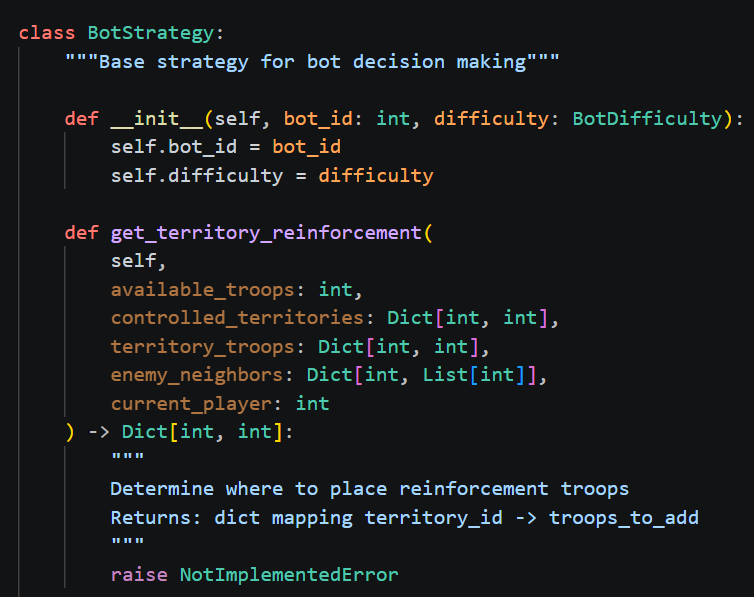

Code du projet

Système de missions

Positions des territoires

IA des bots

Projet Python inspiré du célèbre jeu Risk avec graphe, cartes, combats et conquête de territoires.
DécouvrirCe projet recrée le jeu Risk avec Python et NetworkX. Chaque territoire est représenté par un nœud dans un graphe relié aux autres territoires.
Carte du monde modélisée avec un graphe.
Système de combat avec dés Risk.
Infanterie, cavalerie, canon et joker.
Capture de territoires et domination.

Le bot analyse les territoires qu’il contrôle, le nombre de troupes disponibles et les territoires ennemis voisins. Il choisit ensuite où placer ses renforts, quels territoires attaquer et comment améliorer sa position sur la carte.
Au début du tour, le joueur reçoit des armées selon ses territoires.
Le joueur peut attaquer un territoire voisin appartenant à un adversaire.
À la fin du tour, le joueur peut déplacer des troupes entre ses territoires.
Si le joueur conquiert un territoire, il peut recevoir une carte Risk.